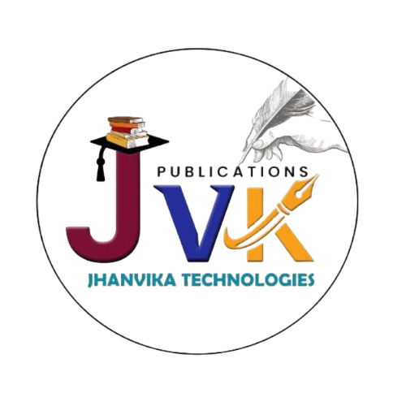

Academic documentation
Topic selection, research proposal, synopsis development, literature review direction, paper writing support and thesis structure.

JVK TechnologiesAbout JVK Technologies
JVK Technologies is a registered MSME based in Gudivada, Andhra Pradesh. We help scholars, students, authors, creators and small businesses prepare academic, intellectual property and digital deliverables with better structure.
What we do
Many projects do not fail because the goal is unclear. They become difficult because the steps are scattered: topic selection, document preparation, formatting, filing requirements, originality checks, publication planning, or deployment setup.
JVK Technologies helps clients convert those scattered requirements into a clear sequence of work. The focus is simple: understand the need, prepare useful material, review it carefully and move to the next action.
Service areas
Topic selection, research proposal, synopsis development, literature review direction, paper writing support and thesis structure.
Journal publication planning, manuscript readiness, formatting checks, revision support, textbook preparation and e-publishing.
Patent publication guidance, design patent documentation, copyright filing support and ownership material organization.
Website setup, web hosting, domain guidance, technical internships, student projects and practical technology support.
Working method
Clarify the goal, subject area, deadline, current files and expected output.
Identify missing inputs, document needs, review points and practical next steps.
Support drafts, checklists, formatting, documentation, filing material or setup tasks.
Prepare the work for review, submission, publication, filing, deployment or discussion.
How we communicate
We keep communication direct and practical. Clients know what is required, what is being prepared, and what should happen next. Academic, technical and invention-related material is handled carefully and privately.
Contact JVK Technologies